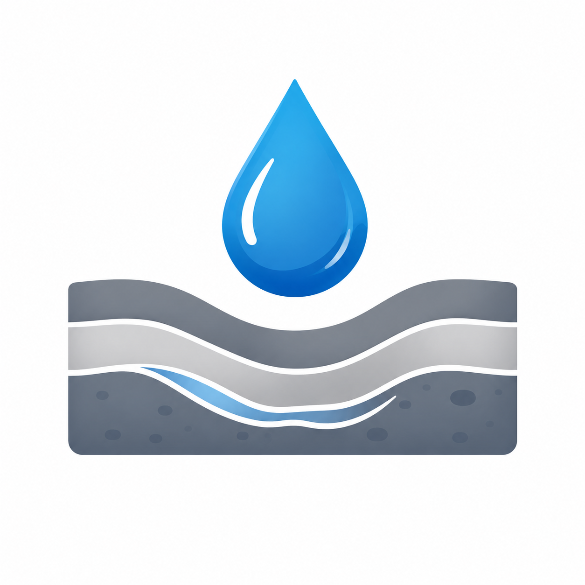
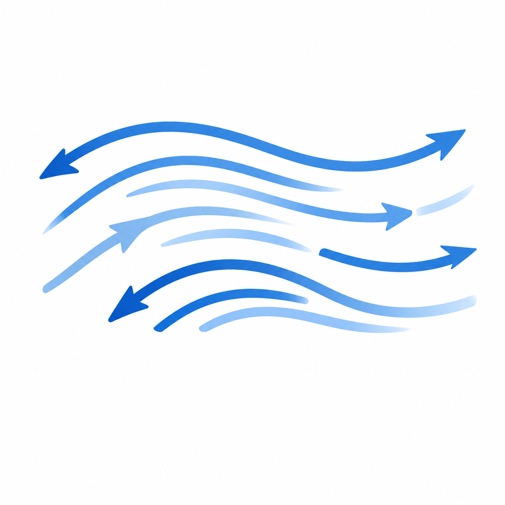

Flood Modelling and River Capacity Analysis
Comprehensive 1D/2D modelling to assess flood risk, river capacity, and infrastructure performance under current and future climate scenarios.
View ProjectWe support engineering consultants, researchers, and public institutions through science-based analysis in hydrology, hydraulics, hydrogeology, climate, coastal systems, and computational fluid dynamics.
Rainfall, runoff, watershed, flood frequency, and climate impact assessment.
River flow, flood inundation, drainage systems, and hydraulic structures.
Tides, waves, tsunami, sediment transport, and coastal inundation.

Aquifer assessment, groundwater flow, seepage, and contaminant transport.

Detailed simulation of complex flow behaviour, turbulence, dispersion, and structure-flow interaction.
Comprehensive 1D/2D modelling to assess flood risk, river capacity, and infrastructure performance under current and future climate scenarios.
View Project
Advanced modelling of tides, waves, storm surge, and sediment transport to support coastal planning and hazard assessment.
View Project
Numerical simulation of groundwater systems for sustainable water resource management and contamination risk evaluation.
View ProjectCommitted to quality, accuracy, and science-based decision making.